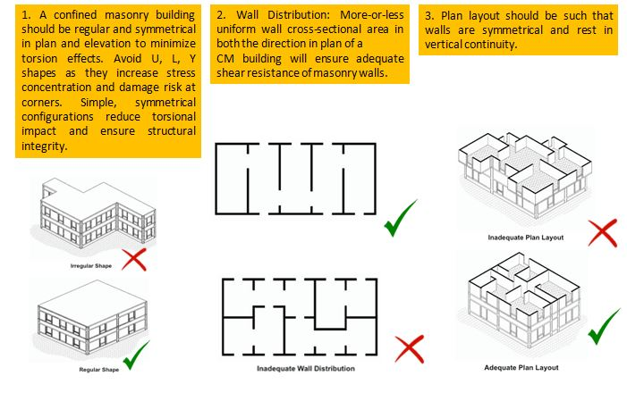

Do’s and Dont’s
7.1. Construction
● Tie columns shall be provided at every corner and wall junctions. If the wall length is more than 4200 mm, divide the wall length and provide additional equi-spaced columns.
● Angled or rounded walls shall not be used in the plan. All the walls must be parallel or perpendicular to each other.
● Use a continuous reinforced concrete plinth beam above the masonry foundation wall.
● English or Flemish bond can be preferred in masonry.
7.2. Construction Guidelines
7.3.Tie Columns Guidelines
7.4.Building Configuration
7.4.Planning
● A building should not be too long compared to its width.
● It is better to construct a large building in smaller sections by providing gaps between different sections.
● A symmetrically designed building performs better during an earthquake.
● A building must be symmetrical in both horizontal and vertical directions.
● All masonry panels must be attached to RCC tie columns by toothing going into the RCC of tie columns as detailed earlier
● The door and window openings should be small and separated by at least 600 mm of masonry.
● The door and window openings should be strengthened by 75 mm thick RCC bands cast around the openings and attached to the RCC sill and lintel bands as shown earlier.

Welded steel door and window frames are made of 40x40x5mm size steel sections, with holdfasts on all the four sides. These are fixed during the masonry work in to the walls using M20 grade concrete and embedded in to the RCC of plinth, sill and lintel bands. This process strengthens the door and window openings.